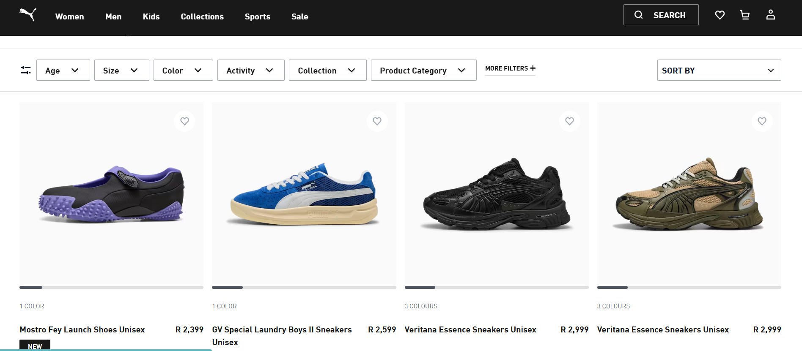

The website is simple and minimalistic, offering a user-friendly
interface that ensures easy navigation for all customers. Its clean
and professional design avoids overstimulation, making it ideal for
banking and financial platforms where professionalism is the top
priority.
The color palette and scheme remains consistent throughout the
website with the colours of the Capitec emblem serving its
foundation and structure , reinforcing the company's brand identity.
This strategic use of color ensures that the combination becomes
strongly associated with Capitec, much like how customers instantly
recognize yellow and red as representing McDonald's.
The text is very readable, with a well-structured hierarchy
maintained throughout the website. The contrasting white background
enhances the clarity of the text, making both the font and colors
stand out for easy readability. Titles are emphasized with bold,
large fonts, while paragraphs feature dark, legible text, ensuring
an easy reading experience.
The site is not content-heavy, presenting only essential information
on key topics. This ensures that users are not overwhelmed with
excessive content, making it user-friendly.
CONS:
Although the navigation bar is straightforward, providing clear
sections and headings for users to access banking information, it
leads to different webpages that each have their own navigation
bars. This inconsistency can be confusing. Additionally, the menu
button feels somewhat hidden and may not be necessary. Instead,
displaying the full navigation bar just like the main one would
make all available sections and forums immediately visible hence
improving accessibility.
PUMA:

https://www.capitecbank.co.za/
PROS:
clean and simple navigation system. user-friendly with simple
instructions
readable and clear font, contrasting white background for clarity
prices and items clearly displayed ensuring user is alerted about
items information before for considering interacting with its
clickable image
Consistent and easy to understand icons.
high definition images with white backrgound which ultimately
blend with the background of the website
CONS:
Although the nav bar is simple and easy to navigate, some of the
links provide other options underneath to different webpages
of/different parts of the website. this can be overwhelming for
the user , as he/she are exposed to a plethora of options to
choose from.
The aesthetic is seemly outdated,the ui/ux elements aren't of the
modernized of today.